<style>body{margin:0;background:#d6e0ea;font:14px Arial;display:grid;grid-template-columns:repeat(4,1fr);gap:8px;padding:8px}figure{margin:0;background:white;padding:8px;height:315px;box-sizing:border-box}img{width:100%;height:270px;object-fit:contain}figcaption{height:25px}</style><figure>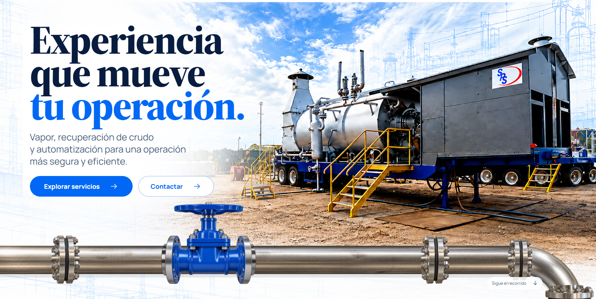<figcaption>inicio 1 · Experienciaque muevetu operación.</figcaption></figure><figure>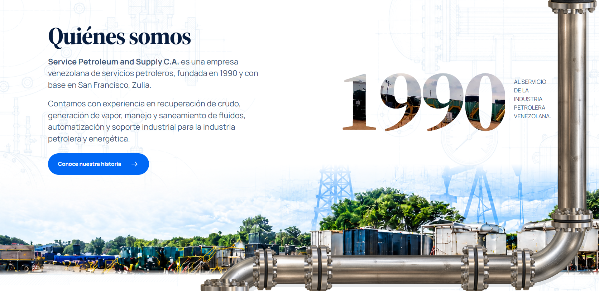<figcaption>inicio 2 · Quiénes somos</figcaption></figure><figure>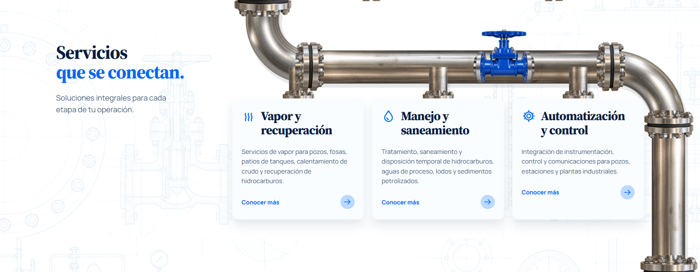<figcaption>inicio 3 · Serviciosque se conectan.</figcaption></figure><figure>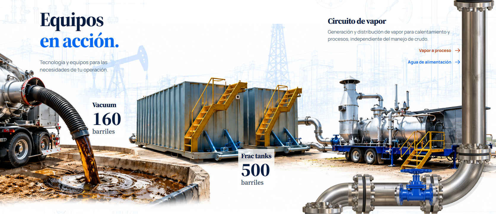<figcaption>inicio 4 · Equiposen acción.</figcaption></figure><figure>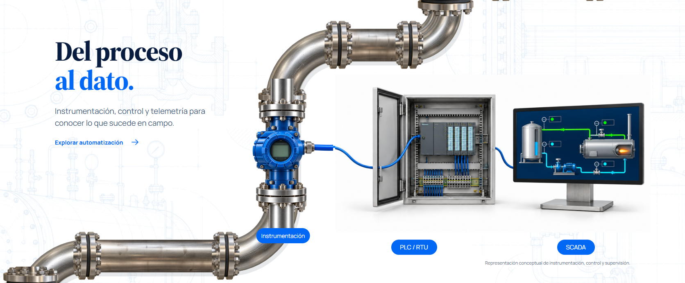<figcaption>inicio 5 · Del procesoal dato.</figcaption></figure><figure>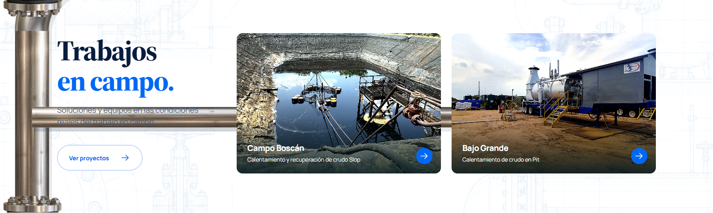<figcaption>inicio 6 · Trabajosen campo.</figcaption></figure><figure>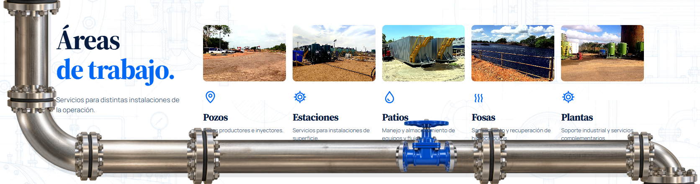<figcaption>inicio 7 · Áreasde trabajo.</figcaption></figure><figure>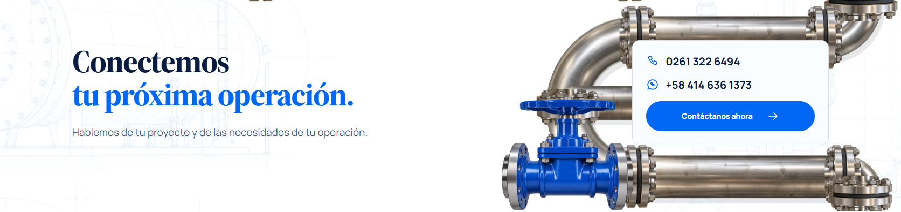<figcaption>inicio 8 · Conectemostu próxima operación.</figcaption></figure><figure>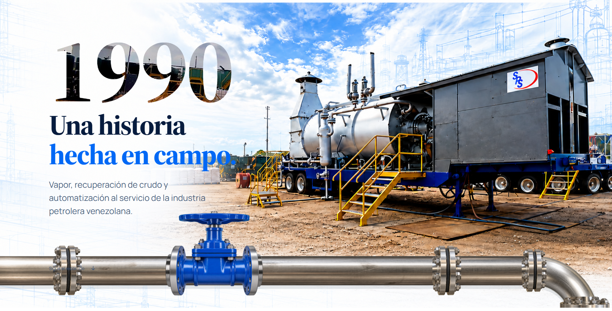<figcaption>nosotros 1 · 1990Una historiahecha en campo.</figcaption></figure><figure>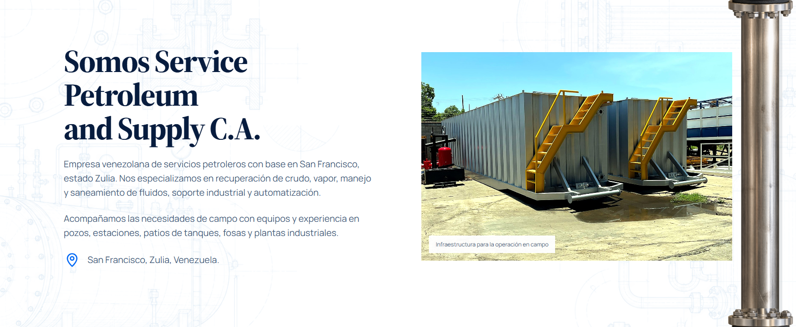<figcaption>nosotros 2 · Somos Service Petroleumand Supply C.A.</figcaption></figure><figure>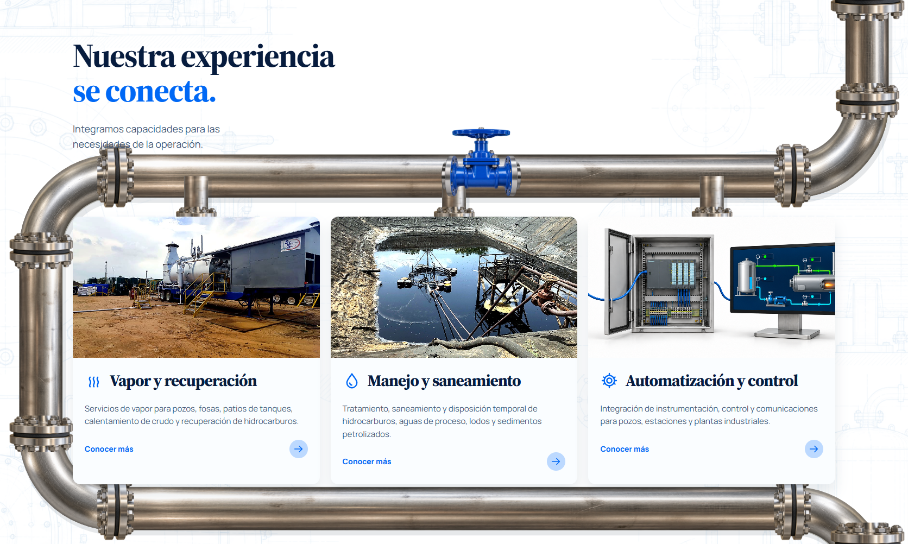<figcaption>nosotros 3 · Nuestra experienciase conecta.</figcaption></figure><figure>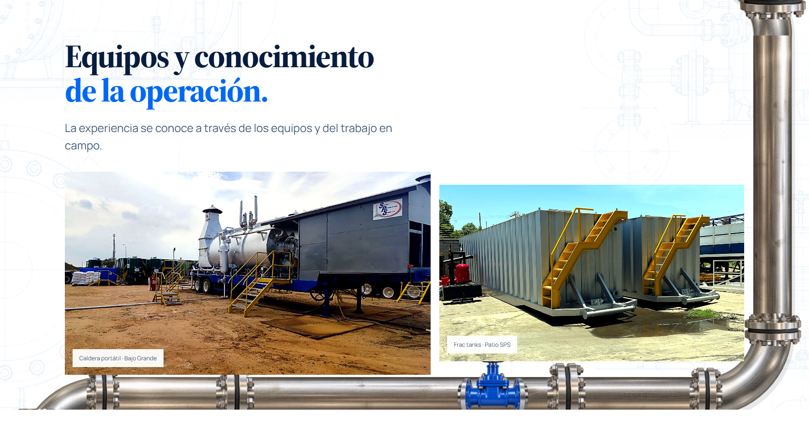<figcaption>nosotros 4 · Equipos y conocimientode la operación.</figcaption></figure>